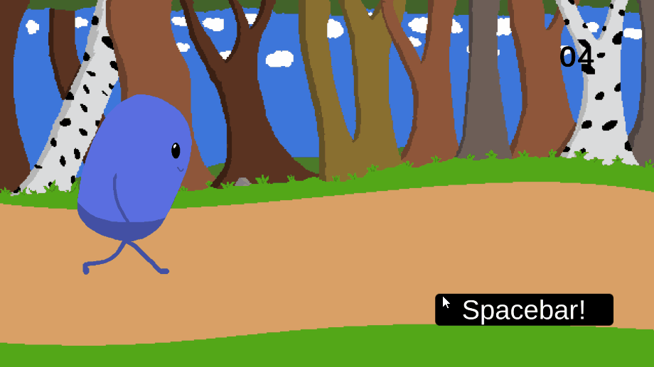
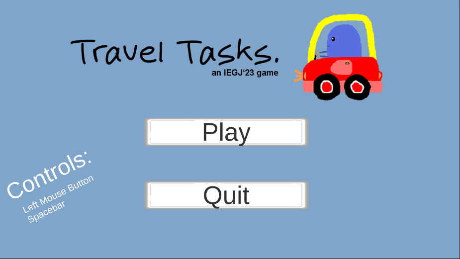

TravelTasks
Description
This project was from a GameJam where we had to make a game in 2 days with the theme Travel.
The idea around TravelTasks
The idea of the game is that you have to do multiple tasks before you can go on your holiday. You have 3 lives, and if you fail your task, you’ll lose one (1) life. If you lose all lives, it’s game over. If you finish 15 amount, you win the game.
Team
The team consisted of 4 developers and 2 artists. This was an international GameJam so our Game Artists came from Sweden.
My contribution
The part that I worked on during this GameJam is the third minigame and the Start screen.
MiniGame3
This is small a small gif of the gameplay where it says in the UI that you need to press the spacebutton to move. It was made in Unity and uses C# as its coding language.
This image is of how the Start screen of the game looks like
It was fun working on this and this is where you can find the project
You can download the game on Itch.ioThe repository to my contribution
Github